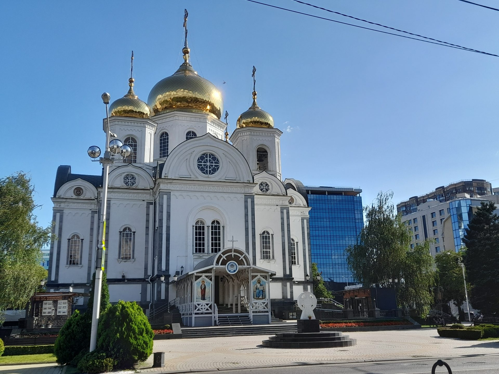

Сердце православного Краснодара — и духовная кафедра казачества
Войсковой собор святого благоверного князя Александра Невского — кафедральный храм Екатеринодарской и Кубанской епархии Русской Православной Церкви и главная духовная кафедра Кубанского казачьего войска. Здесь, на исторической Соборной площади Краснодара, соединяются воинская память и церковное предание.
Собор был торжественно заложен 1 апреля 1853 года атаманом Черноморского казачьего войска генерал-майором Яковом Кухаренко. Проект храма выполнил войсковой архитектор Иван Денисович Черник — выпускник Императорской Академии художеств в Санкт-Петербурге, ученик К. А. Тона. Строительство, начатое на войсковые средства и пожертвования казаков, продолжалось девятнадцать лет и завершилось великим освящением в 1872 году.
В 1930-х годах собор был закрыт и разрушен богоборческой властью; на его месте долгие десятилетия не оставалось и следа святыни. Возрождение храма стало возможным лишь в начале XXI века: в 2003–2006 годах собор был воссоздан на новом месте — на пересечении улиц Постовой и Красной — по проекту архитектора Владимира Тимофеевича Головерова.
Великое освящение возрождённого собора 28 мая 2006 года совершил митрополит Смоленский и Калининградский Кирилл — ныне Святейший Патриарх Московский и всея Руси. С этого дня войсковой собор вновь стал местом главных богослужений епархии, войсковых служб казачества и духовным центром всей Кубани.
Полное наименование: Местная религиозная организация «Православный приход храма во имя святого благоверного князя Александра Невского г. Краснодара Екатеринодарской и Кубанской епархии Русской Православной Церкви». ИНН: 2309091590 · ОГРН: 1052335002521 Адрес: 350063, г. Краснодар, ул. Постовая, 26
Вид со стороны Соборной площадиWikimedia Commons · CC BY-SA

Пять золочёных куполов — символ Спасителя и четырёх евангелистовWikimedia Commons · CC BY-SA
1853Закладка
1872Освящение
43мВысота
5Куполов
2006Возрождение
Внутри собора
Что вы увидите, переступив порог
Архитектура
Византийский канон в камне Кубани
Пятикупольный храм в византийском стиле, высотой 43 метра, увенчанный позолоченными главами. Симметрия плана, арочные галереи и белокаменная отделка отсылают к древнерусским соборным традициям XII века.
В соборе пребывают чтимые иконы святого благоверного князя Александра Невского с частицей мощей и Казанский образ Пресвятой Богородицы — главные святыни, перед которыми ежедневно совершаются молебны.
Колокола, отлитые в 2005 году, были освящены лично Святейшим Патриархом Алексием II. Их звон, разносящийся над Постовой улицей, открывает каждое богослужение и собирает прихожан со всего города.